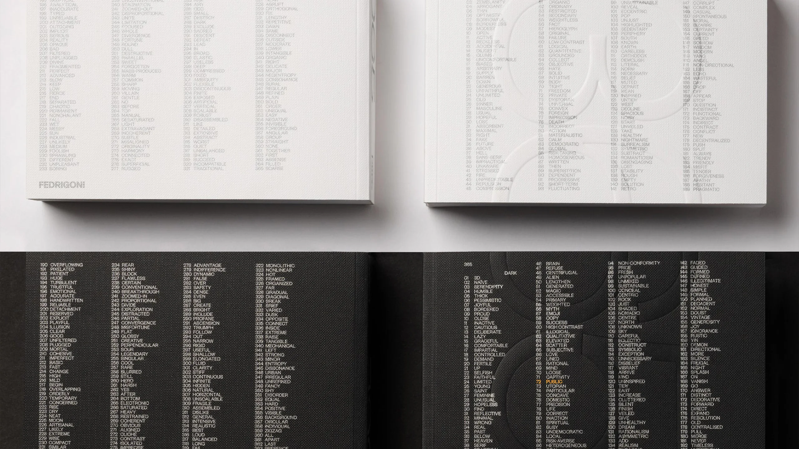
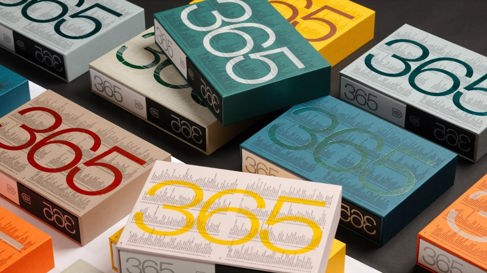
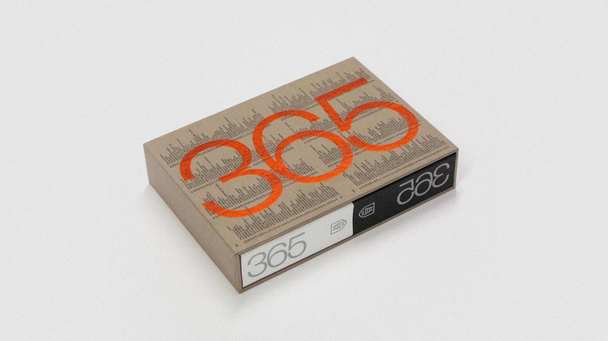
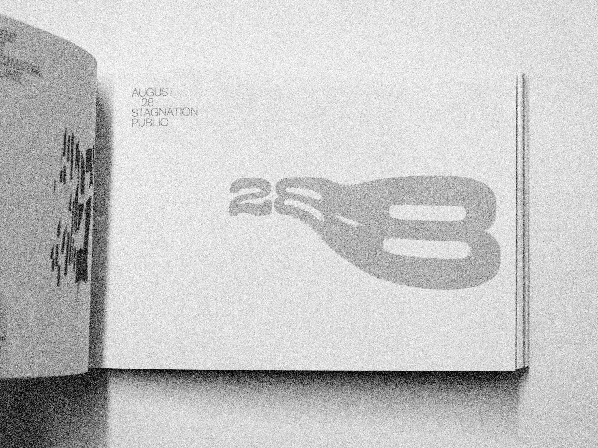

Overview
I had the privilege of contributing to the Fedrigoni 365 calendar for 2025, an annual collaborative project that brings together creatives from around the UK. Each designer or studio is assigned a specific date to interpret, creating a unique piece that highlights their style and vision. Being part of this collection is a celebration of creativity and craftsmanship, and it was an honor to work alongside such a talented community of artists.
Working on this short yet awesome project was all thanks to Simon Parkes over at Public London, whom I had the pleasure of interning with, over my 2nd year uni summer break. Thanks again if you're reading this!
Fedrigoni is a renowned Italian paper manufacturer known for its high-quality, premium paper products used in design, packaging, and publishing. Each year, Fedrigoni produces the Fedrigoni 365 calendar, a collaborative project that showcases the creativity of designers, artists, and studios from around the world.
The calendar follows a unique annual theme. For this edition, the concept revolves around opposites. Each day features two versions, one positive and one negative, offering contrasting interpretations of the same date. This approach highlights the versatility of Fedrigoni's papers and demonstrates how design can shift perspectives through color, texture, and print techniques.


We were gifted, probably one of the most obscure words of any featured. Both challenging, and exciting, exploring how something stagnant could be represented.
We spent some time exploring older copies of Fed365 and found that the most successful pieces were those that were visually simple and easy to digest.
Spending a while wondering what stagnation even is, is how we came to the realisation, that time is the single most important factor to capturing this event or the result of it. Something must be in motion in-order to become stagnant.
We immediately got to work in After Effects, messing with different representations of this concept, before coming up with this decay animation. Something decaying due to lack of upkeep, and becoming stagnant.
As designers who are heavily interested in motion graphics, this dynamic solution immediately resonated with us. We considered how we could represent movement through form, experimenting with stretched typography, blurred shapes, and echoes of motion trails frozen in place. The final design captured this concept in a way that felt both striking and thought-provoking.
The approach not only stood out to us but also caught the attention of the Creative Director of Public London. They appreciated the depth of thought behind the execution and how it transformed a simple theme into a layered visual experience. This project reinforced our belief in the power of design to communicate ideas beyond words and challenged us to think about how movement, or the lack thereof, can tell a story in an unexpected way.
